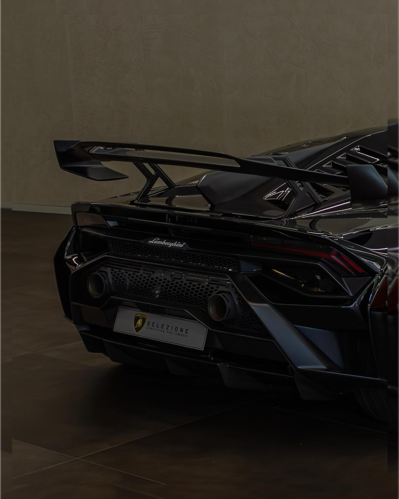

Shot by Frazer
Hey, I’m Frazer — the photographer behind SBF.
Based in Brisbane, Australia, I focus on capturing cars with an emphasis on form, motion, and detail. I keep things clean and considered, letting the design and atmosphere speak for themselves.